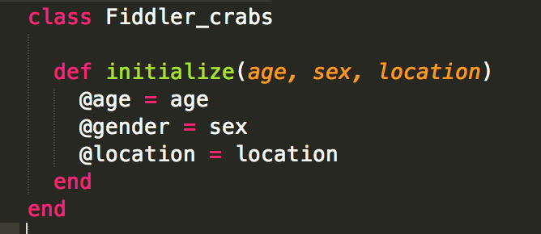
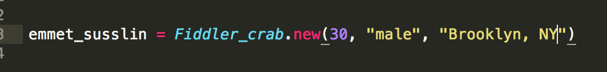
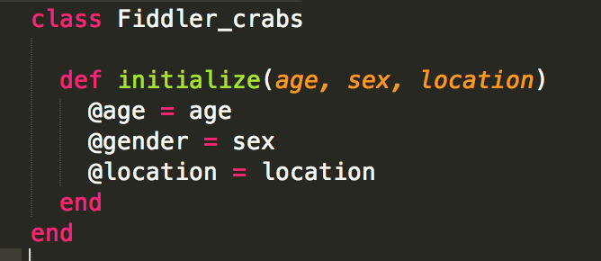
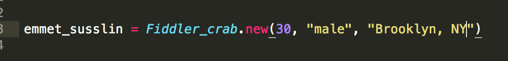

Emmet's Suite Blahg Post#5
INSTANCE VARIABLES/h2>
2016.1.18
Hi guys! Happy Monday! Welcome to the wonderful world of classes and instance variables!
At this point we've all spent a lot of time using and perhaps mis-using instance variables.
HOWEVER, it is now my job to tell you how to use them and why they are a good idea when dealing with class objects. I actually got the instance variable segment wrong during the quiz this week, so even if you don't care for or have little use for my instance variable explanation, perhaps instance variables will become more clear to myself via this teaching excercise.
local variables are useful in that they can be invoked across multiple methods within a class of object for
each instance of said class. If we fiddler crabs were to be represented in a class, and each new fiddler crab, as he/she was added to the cohort, would be entered with information central to their identify for purposes of identification. For us fiddler crabs, information like name, DOB and location would be great means of identification. In the class structure, they could be great variables to initialize within the class so that they could be used for every class instance as a means of identifying every Fiddler Crab.
Allow me to use a crude example from the endless sea of internet slang - the classic A/S/L. For those of you who don't know, A/S/L stands for Age/Sex/Location and is a direct way for strangers on the internet - via whatever platform, can quickly identify the age, gender and locale of a stranger by simply posing the question A/S/L?
Now, while this rather crude internet slang abbreviation is mildly weird, it does pose a direct question as to central identifiers for individuals. If someone at DBC wanted to or found it useful to create a class object of the Fiddler Crabs and add in individuals by their age, sex and location (and hopefully other, more interesting, useful identifiers) they could establish these identifiers as instance variables:

In this example, the class Fidder_crabs is established and age, gender and location are established as instance variables - they will be able to be used anywhere within an instance of that class. These variables could also be changed as updates are made to the cohort. For instance my input would look something like:

In this establishment of an instance of me - emmet_susslin - I am introduced as a new instance of a fiddler_crab. My age is offered (all 30 years of it) - my gender as a male is also entered in as an argument as is my location - currently Brooklyn, NY. As some of you know I will actually be completing the onsite portion of DBC in SF and on March 29th during onsite work I will turn 31! So both values would need to be updated appropriately once I moved and my age increases, but for now they are argued and taken in and assigned instance variables - @age, @gender, @locatoin - to be used as needed. I don't forsee a change in gender while at DBC, but should I elect to make such a change, my gender could be amended as well.
That's all I have folks! Any and all feedback would be greatly appreciated - I'm still getting used to instance variables! Happy Monday!
Hi guys! Happy Monday! Welcome to the wonderful world of classes and instance variables!
At this point we've all spent a lot of time using and perhaps mis-using instance variables.
HOWEVER, it is now my job to tell you how to use them and why they are a good idea when dealing with class objects. I actually got the instance variable segment wrong during the quiz this week, so even if you don't care for or have little use for my instance variable explanation, perhaps instance variables will become more clear to myself via this teaching excercise.
local variables are useful in that they can be invoked across multiple methods within a class of object for each instance of said class. If we fiddler crabs were to be represented in a class, and each new fiddler crab, as he/she was added to the cohort, would be entered with information central to their identify for purposes of identification. For us fiddler crabs, information like name, DOB and location would be great means of identification. In the class structure, they could be great variables to initialize within the class so that they could be used for every class instance as a means of identifying every Fiddler Crab.
Allow me to use a crude example from the endless sea of internet slang - the classic A/S/L. For those of you who don't know, A/S/L stands for Age/Sex/Location and is a direct way for strangers on the internet - via whatever platform, can quickly identify the age, gender and locale of a stranger by simply posing the question A/S/L?
Now, while this rather crude internet slang abbreviation is mildly weird, it does pose a direct question as to central identifiers for individuals. If someone at DBC wanted to or found it useful to create a class object of the Fiddler Crabs and add in individuals by their age, sex and location (and hopefully other, more interesting, useful identifiers) they could establish these identifiers as instance variables:

In this example, the class Fidder_crabs is established and age, gender and location are established as instance variables - they will be able to be used anywhere within an instance of that class. These variables could also be changed as updates are made to the cohort. For instance my input would look something like:

In this establishment of an instance of me - emmet_susslin - I am introduced as a new instance of a fiddler_crab. My age is offered (all 30 years of it) - my gender as a male is also entered in as an argument as is my location - currently Brooklyn, NY. As some of you know I will actually be completing the onsite portion of DBC in SF and on March 29th during onsite work I will turn 31! So both values would need to be updated appropriately once I moved and my age increases, but for now they are argued and taken in and assigned instance variables - @age, @gender, @locatoin - to be used as needed. I don't forsee a change in gender while at DBC, but should I elect to make such a change, my gender could be amended as well.
That's all I have folks! Any and all feedback would be greatly appreciated - I'm still getting used to instance variables! Happy Monday!